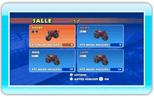
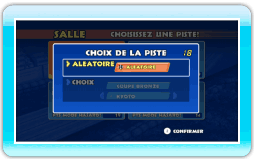
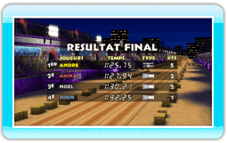

17 |
Mode hasard |
 |
|
En mode hasard, vous pouvez affronter des joueurs du monde entier grâce à la connexion
Wi-Fi Nintendo. Vous pouvez choisir la couleur de votre moto sur l’écran des salles en appuyant sur
 . Appuyez sur . Appuyez sur  pour confirmer. Si vous souhaitez quitter la salle, appuyez sur pour confirmer. Si vous souhaitez quitter la salle, appuyez sur  pour afficher le menu des options de la salle, puis sélectionnez DECONNEXION. pour afficher le menu des options de la salle, puis sélectionnez DECONNEXION.
Choisissez une piste dans la liste. Vous pouvez également laisser l’ordinateur choisir pour vous en sélectionnant ALEATOIRE. La piste de la course sera ensuite tirée au sort parmi les choix des joueurs présents.
A la fin de la course, vous gagnez des points mode hasard en fonction de vos résultats. Les points mode hasard permettent de débloquer de nouveaux motifs pour votre moto.
|
 |
 |
 |